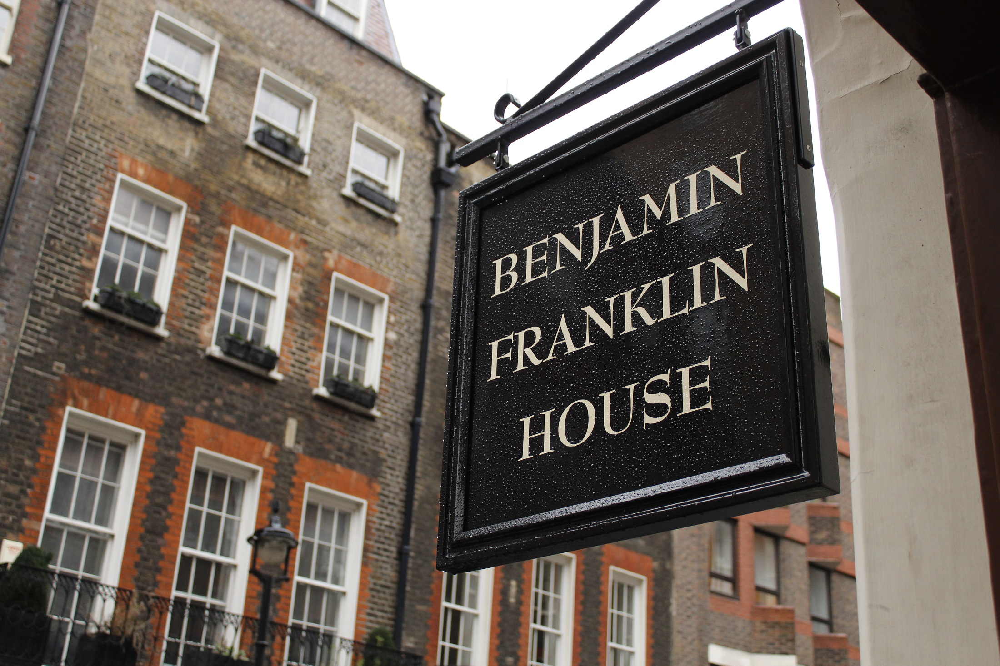
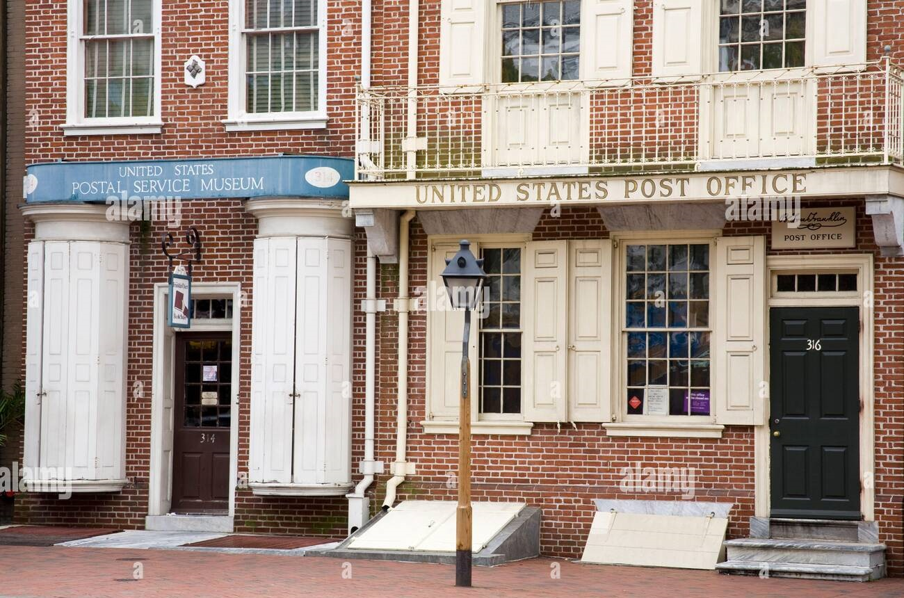
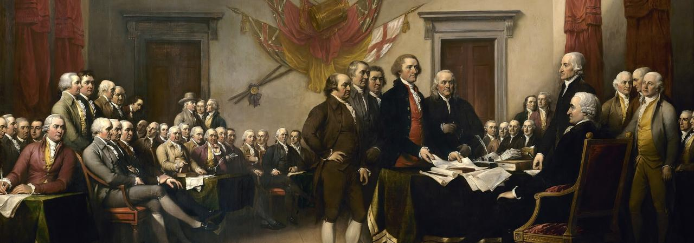

Ogólny zarys
Dzieciństwo i młodość
Urodził się 17 stycznia 1706 w Bostonie jako dziesiąty syn z siedemnaściorga dzieci.
Jego ojcem był niezamożny wytwórca świec i mydła Josiah Franklin, pochodzący z Ecton w hrabstwie Northamptonshire
(do Stanów Zjednoczonych przybył ok. 1683). Po śmierci pierwszej żony, Josiah poślubił Abiah Folger, która urodziła mu
jeszcze dziesięcioro dzieci (w tym Benjamina) i zajmowała się domem.
Młody Benjamin miał być początkowo przeznaczony do służby kościelnej.
W wieku dwunastu lat, rozpoczął jednak pracę w zakładzie drukarskim swojego brata Jamesa,
który od 1721 wydawał „New England Courant”. W podeszłym wieku cierpiał na kamicę pęcherza moczowego, z
powodu której odczuwał silne bóle i zażywał opium.
Benjamin Franklin zmarł 17 kwietnia 1790 w Filadelfii.

Praca w Drukarni
Praca drukarza
Początkowo pracował jako drukarz, jednak za zachętą ówczesnego gubernatora Pensylwanii, Williama Keitha, usiłował założyć własne wydawnictwo.
W tym celu, w 1724, wyjechał do Londynu, jednak został oszukany przez swojego protektora, gubernatora Keitha.
Pomoc otrzymał wówczas od znajomego pasażera, z którym przypłynął - Denhama. Dzięki niemu, po dwóch latach pobytu, obaj wyruszyli w drogę powrotną do Filadelfii,
gdzie Franklin rozpoczął pracę jako drukarz. Wiosną 1727 obaj poważnie zachorowali (Franklin zapadł na zapalenie opłucnej). Denham zmarł, pozostawiając
Franklinowi niewielki spadek.
Wówczas Benjamin Franklin założył dyskusyjny klub wzajemnego doskonalenia „Junto”, w którym współpracował m.in. z protestanckim
teologiem, Cottonem Matherem, a dwa lata później napisał rozprawę The Nature and Necessity of a Paper Currency, która stała się przyczynkiem do rozwoju ekonomii.
Od 1730 zaczął wydawać „The Pennsylvania Gazette”.
W latach 1732-1757 wydawał poczytny zbiór maksym i porad, zatytułowany „Almanach biednego Ryszarda”, który oprócz korzyści materialnych, przyniósł mu także popularność.
Pracując jako drukarz działał na rzecz miasta - na jego wniosek utworzono m.in. ochotniczą straż pożarną, policję miejską i szpital.
W 1731 założył wypożyczalnię książek, a w 1743 - Amerykańskie Towarzystwo Filozoficzne. Jednak jego głównym celem było założenie akademii dla uzdolnionej młodzieży.
Wraz z członkami klubu Junto napisał projekt Realting to the Education of Youth in Pensilvania.
W ciągu kilku tygodni
Mimo że był w większości samoukiem, miał rozległą wiedzę - znał cztery języki obce: łacinę, francuski, włoski i hiszpański.
Od rozpoczęcia pracy drukarskiej przedstawiał się zawsze jako „Franklin drukarz”
